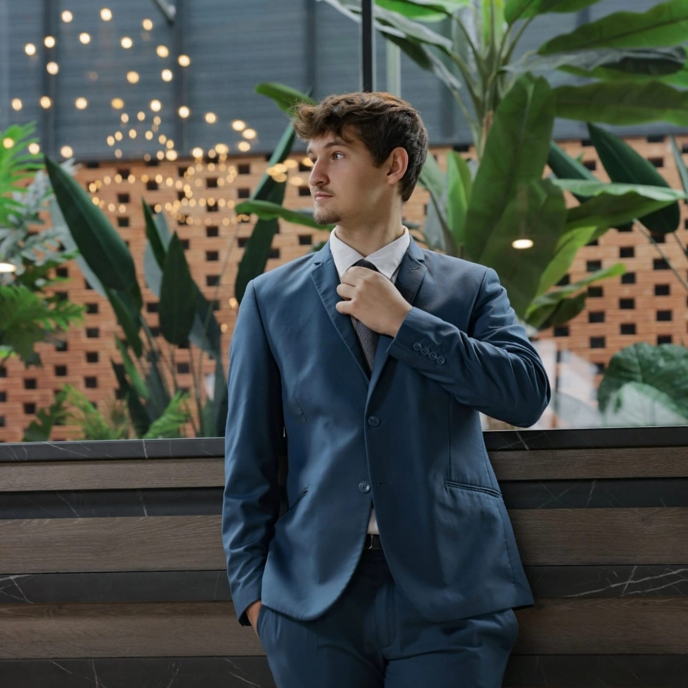

Nume si prenume: Man David-Luca
E-mail: Man.Fl.David@student.utcluj.ro
Nascut in 2007.

Asteptari legate de educatie
Imi doresc imbunatatirea si dezvoltarea cunostintelor in domeniul electronicii si a tehnologiei informatiei.
In opinia mea, studiile universitare trebuie sa ne ofere o baza eficienta si solida de informatii care sa ne ajute in domeniul respectiv si nu numai.
| Disciplina | Anul | Fisa disciplinei |
|---|---|---|
| Fizica I | I | Fizica |
| Componente si circuite pasive | I | CCP |
| Dispozitive electronice | I | Dispozitive electronice |
Hobby-uri si alte activitati reprezentative:
1. Sport
2. Gaming
3. Offroad
4. Iesirile in natura
5. Mecanica